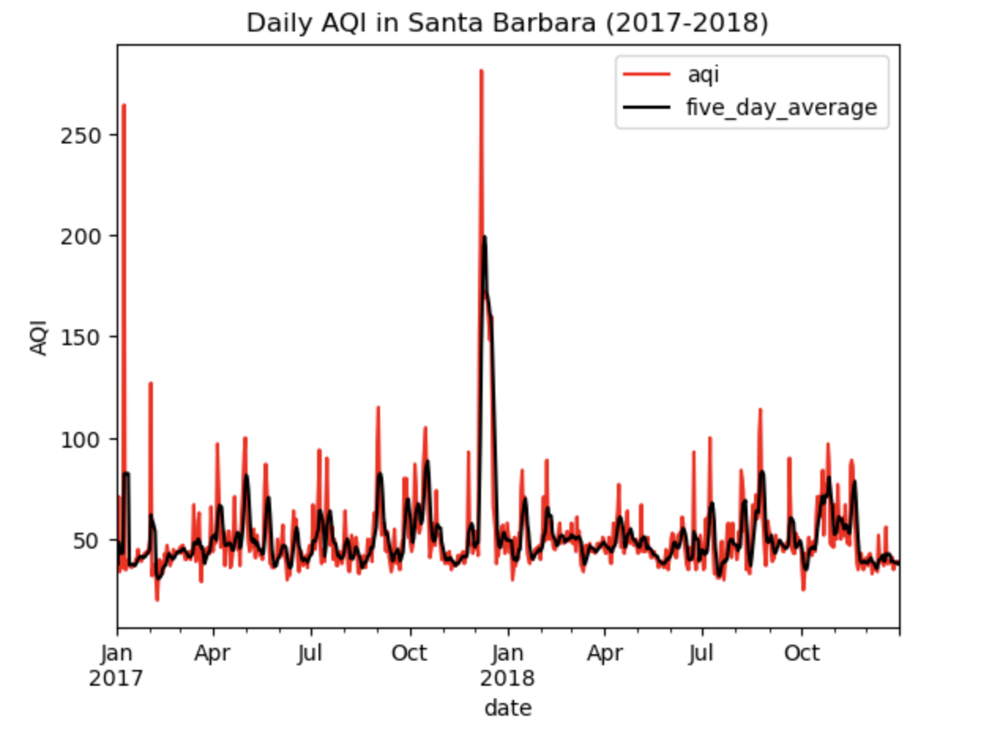
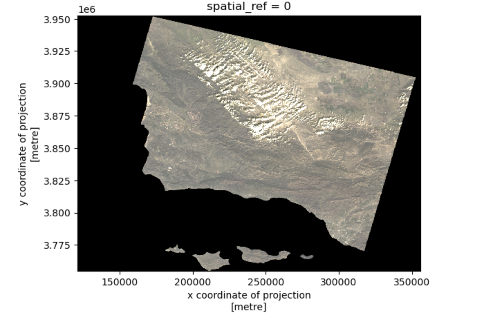
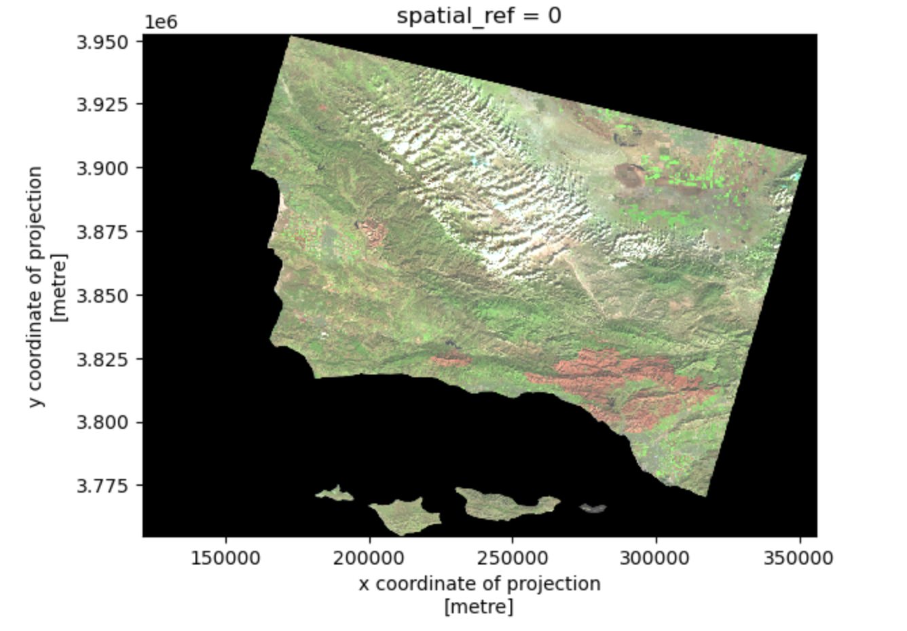
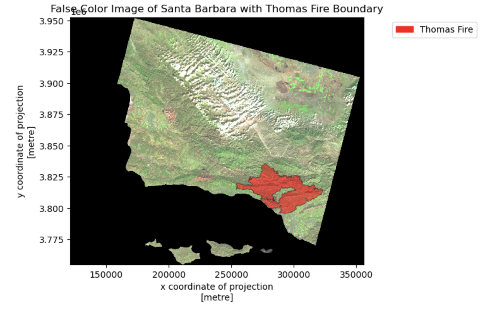

Plotting AQI and Thomas Fire Burn Area in Santa Barbara County in Python
This is an analysis that I did where I looked at daily air quality index values in Santa Barbara in 2017-2018 as well as the area burned by the Thomas Fire (2017) and plotted both.
Plotting AQI in Santa Barbara and Thomas Fire Burn Area Map
For this project, I looked into constructing a plot of air quality index (AQI) values for Santa Barbara from 2017 to 2018. I also constructed an overlay of the Thomas Fire burn area on a false color image of Santa Barbara county.
Link to Github Repository: https://github.com/fletcher-m/aqi-thomas-fire-sb
Plotting AQI in Santa Barbara
The main goal for this section of the project was to develop a plot in order to visibly see if I could pick out a spike in AQI values during the time of the Thomas Fire in 2017. Fires tend to lead to spikes in AQI values, due to the amount of smoke that they emit. I expected to see that spike sometime around December of 2017.
The data that I used for plotting AQI values was AQI data for the years of 2017-2018. If you would like to see what data I used and other coding steps that I took, please check out the GitHub repository linked above. Generally, I combined the data, filtered to the Santa Barbara County and made some updates in order to simplify the data frame. An important note is that I converted the date column to a datetime object in order to plot this. “aqi_sb” is the data frame that I had wrangled in some previous steps.
Code
# update the 'date' column to a datetime object and override the 'date' column with the outputaqi_sb.date = pd.to_datetime(aqi_sb.date)# set date column as indexaqi_sb = aqi_sb.set_index('date')# check to make sure the index is the 'date' column --> The data type of the index is 'datetime64'aqi_sb.index
After I had the data in the correct format, time frame and target area, all that was left was to plot the information so that I could easily visualize it. I plotted a 5 day average along with daily AQI values to give a better idea of longer trends in the data. Below is the final plot.
Code
# assign line colors for 'aqi' and 'five_day_average' colors = {'aqi': 'red','five_day_average': 'black'}# make a line plot for 'aqi' and 'five_day_average' over timeaqi_sb[['aqi', 'five_day_average']].plot(title="Daily AQI in Santa Barbara (2017-2018)", color=colors, ylabel='AQI')

As you can see from the plot, there is an obvious spike around December of 2017, which is what I expected. The Thomas Fire was quite large and left a massive burn area in its wake. In the next section, I will plot that burn area and show it in relation to Santa Barbara County.
Plotting Image of Santa Barbara With Thomas Fire Boundary
I first set about plotting an image of Santa Barbara using data collected from satellite. There were a couple of steps before this, which you can see on my github repository (link above). This first plot uses the “red”, “green”, and “blue” bands in order to create a true color image. Below, you can see that image plotted with the Santa Barbara region and Channel Islands off of the coast.
Code
# select red, green and blue variables from the NetCDF data and plot bands[['red', 'green', 'blue']].to_array().plot.imshow(robust = TRUE)

After plotting this true color image of the Santa Barbara region, I wanted to see what a false color image would look like. This followed the same process, only selecting different bands to display. Instead of “red”, “green” and “blue”, I chose short-wave infrared (SWIR22), near-infrared (NIR08), and red bands. Below is a plot of what that looks like.
Code
# select short wave infrared, near-infrared and red variables and plotbands[['swir22', 'nir08', 'red']].to_array().plot.imshow(robust=True)

In order to find the burn area for the Thomas Fire (2017), I had to do some filtering of the fire data so that I ended up with only data about the Thomas Fire.
Code
# initiate figurefig, ax = plt.subplots(figsize=(6,6))# plot false color image of Santa Barbarafalse_color.plot.imshow(ax=ax, robust=True)# plot Thomas Fire regionthomas_fire.plot(ax=ax, color='red', alpha=0.5, edgecolor='black', linewidth=0.5)thomas_patch = mpatches.Patch(color='red', label='Thomas Fire')# create legendax.legend(handles=[thomas_patch], frameon=True, loc='upper right', bbox_to_anchor=(1.4, 1))ax.set_title('False Color Image of Santa Barbara with Thomas Fire Boundary')

Summary and Take-Aways
Visualizing data is almost always the best way to gain a grasp on data. Looking at the raw data for AQI values in Santa Barbara would have led to seeing high numbers during the Thomas Fire, but the line plot really puts it into perspective. Overlaying the burn area is also a great way to show the impact of the fire.
I think that at times, it is easy to get caught up in the data, forgetting where it all came from, so I want to briefly describe the impact of the fire that I analyzed. The Thomas Fire was the largest fire in modern California history, burning 273,400 acres over a period of 6 months (“The Thomas Fire, the Largest Wildfire in California’s Modern History, Is Out | CNN,” n.d.). It was the 3rd most destructive in structure losses, destroying 1,063 buildings (“The Thomas Fire, the Largest Wildfire in California’s Modern History, Is Out | CNN,” n.d.). There were many factors that led to the size of this fire, including strong Santa Ana winds that fanned the flames, and it will undoubtedly remain in the top of the charts for California fires.